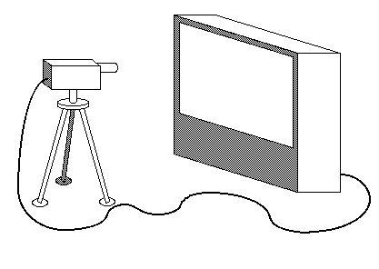
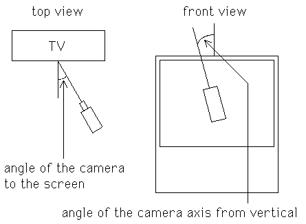

| To set up a video feedback experiment, connect the video out of a videocamera
to the video in of a TV monitor. |
|  |
| Point the videocamera at the TV screen. |
| Adjust the zoom so the image of the whole screen
appears on the screen. |
|
| The camrea sees screen within screen, so it sends screen
within screen to screen and it sees screen within screen within screen. And so on,
a sequence of images, screen within screen within screen, appearing to extend off
into the distance. |
|
|
| In Godel, Escher, Bach, Douglas
Hofstadter calls this
arrangement a self-engulfing TV screen. Twelve examples, including some sprials, are
recorded on pages 490-491, part of "Edifying Thoughts of a Tobacco Smoker," one of the
entertaining dialogues between Achilles and the Tortise. Hofstadert points out a
connection between chaos and some video feedback patterns on page 281 of
The Mind's Eye. |
| In the old days, many barber shops had mirrors on the front
and back walls. Sitting between the mirrors, your image was reflected again and again,
each successive you shrinking into the distance. |
| Recall in Tlon, Uqbar, Orbis Tertius,
Borges
wrote, "... one of the heresiarchs of Uqbar had stated that mirrors and copulation are
abominable, since they both multiply the numbers of man." |
| The variables of the experiment include |
| * the light level of the room, |
| * the camera zoom, |
| * the angle of the camera to the screen, |
| * and the angle of the camera axis from vertical, and |
| * the brightness and color level of the camera. |
|  |